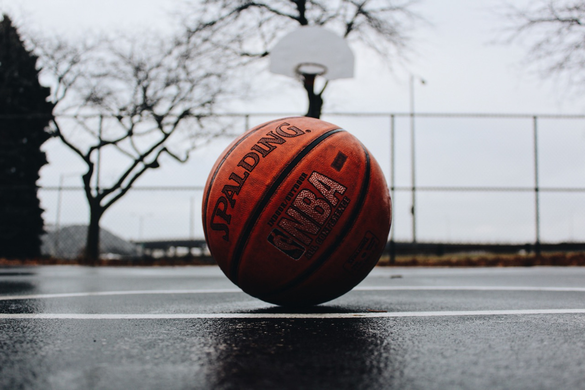

나름 잘한다. 슛과 리바운드, 레이업의 적절한 조화가 이루어진다. 다만 드리블과 돌파가 조금 약하다.

2018년 11월 10일 박동현의 코딩 실력은 c언어를 대충 끝낸 뒤 html 공부를 시작하며 이 웹사이트를 만들고 있다.

현대청운고등학교에 입학 후, 주변 친구들이 피아노를 좋아해 시작했다. (전지원은 피아노에 미쳤다.) 처음으로 연습한 곡은 즉흥환상곡인데, 얼마 가지 않아 내다 버리고 플라워댄스를 연습하기 시작했다. 2018년 11월 10일의 박동현은 어느정도 잘친다.